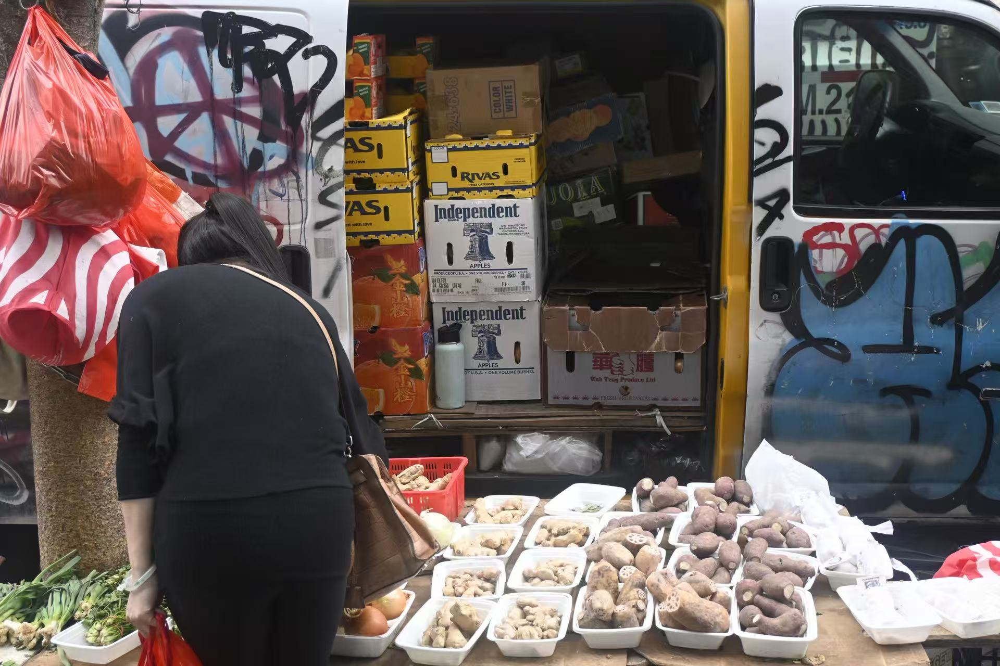

Entry 4: Morning Market — Chinatown
Morning in Chinatown begins long before the rest of the city is fully awake. The streets near Canal and Mott are alive with sound — the clatter of metal shutters rolling open, the splash of water as vendors rinse their stalls, the soft thud of crates set down on wet pavement. Voices fill the air in bursts: greetings, bargaining, laughter, and the rhythmic shuffle of carts moving along the curb.
Every corner has its own music. A fishmonger calls out the day’s catch, his voice rising above the hum of conversation. Plastic bags rustle as customers pick through bunches of choy sum and cilantro, the smell of ginger and scallions sharp in the damp morning air. Somewhere behind the produce stands, a cleaver strikes the chopping board in a steady, confident rhythm — part percussion, part heartbeat.
The languages overlap like melodies — Cantonese, Mandarin, English, and something else in between, the language of familiarity. Elderly shoppers exchange quick words about prices and recipes; tourists pass through, slower, curious, holding phones out to take photos. For a moment, everyone shares the same narrow street, moving to the same unspoken tempo.
As sunlight climbs over the buildings, the market grows louder, brighter, more awake. Delivery trucks back up with a sharp beep-beep, steam rises from breakfast stalls selling baozi and soy milk,
